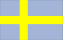
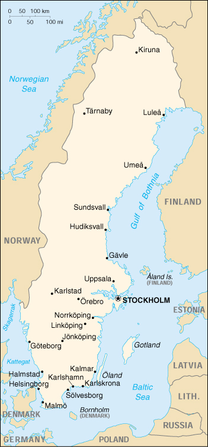

{kind=link}


| Sweden |  |
|
|  | |
| Introduction |
Background: A military power during the 17th century, Sweden has not participated in any war in almost two centuries. An armed neutrality was preserved in both World Wars. Sweden's long-successful economic formula of a capitalist system interlarded with substantial welfare elements has recently been undermined by high unemployment, rising maintenance costs, and a declining position in world markets. Indecision over the country's role in the political and economic integration of Europe caused Sweden not to join the EU until 1995, and to forgo the introduction of the euro in 1999.
| Geography |
Location: Northern Europe, bordering the Baltic Sea, Gulf of Bothnia, Kattegat, and Skagerrak, between Finland and Norway
Geographic coordinates: 62 00 N, 15 00 E
Map references: Europe
Area:
total:
449,964 sq km
land:
410,934 sq km
water:
39,030 sq km
Area - comparative: slightly larger than California
Land boundaries:
total:
2,205 km
border countries:
Finland 586 km, Norway 1,619 km
Coastline: 3,218 km
Maritime claims:
continental shelf:
200-m depth or to the depth of exploitation
exclusive economic zone:
agreed boundaries or midlines
territorial sea:
12 nm (adjustments made to return a portion of straits to high seas)
Climate: temperate in south with cold, cloudy winters and cool, partly cloudy summers; subarctic in north
Terrain: mostly flat or gently rolling lowlands; mountains in west
Elevation extremes:
lowest point:
Baltic Sea 0 m
highest point:
Kebnekaise 2,111 m
Natural resources: zinc, iron ore, lead, copper, silver, timber, uranium, hydropower
Land use:
arable land:
7%
permanent crops:
0%
permanent pastures:
1%
forests and woodland:
68%
other:
24% (1993 est.)
Irrigated land: 1,150 sq km (1993 est.)
Natural hazards: ice floes in the surrounding waters, especially in the Gulf of Bothnia, can interfere with maritime traffic
Environment - current issues: acid rain damaging soils and lakes; pollution of the North Sea and the Baltic Sea
Environment - international agreements:
party to:
Air Pollution, Air Pollution-Nitrogen Oxides, Air Pollution-Sulphur 85, Air Pollution-Sulphur 94, Air Pollution-Volatile Organic Compounds, Antarctic-Environmental Protocol, Antarctic Treaty, Biodiversity, Climate Change, Desertification, Endangered Species, Environmental Modification, Hazardous Wastes, Law of the Sea, Marine Dumping, Nuclear Test Ban, Ozone Layer Protection, Ship Pollution, Tropical Timber 83, Tropical Timber 94, Wetlands, Whaling
signed, but not ratified:
Air Pollution-Persistent Organic Pollutants, Climate Change-Kyoto Protocol
Geography - note: strategic location along Danish Straits linking Baltic and North Seas
| People |
Population: 8,873,052 (July 2000 est.)
Age structure:
0-14 years:
18% (male 837,358; female 794,774)
15-64 years:
64% (male 2,901,809; female 2,805,138)
65 years and over:
18% (male 648,865; female 885,108) (2000 est.)
Population growth rate: 0.02% (2000 est.)
Birth rate: 10.01 births/1,000 population (2000 est.)
Death rate: 10.62 deaths/1,000 population (2000 est.)
Net migration rate: 0.86 migrant(s)/1,000 population (2000 est.)
Sex ratio:
at birth:
1.05 male(s)/female
under 15 years:
1.05 male(s)/female
15-64 years:
1.03 male(s)/female
65 years and over:
0.73 male(s)/female
total population:
0.98 male(s)/female (2000 est.)
Infant mortality rate: 3.49 deaths/1,000 live births (2000 est.)
Life expectancy at birth:
total population:
79.58 years
male:
76.95 years
female:
82.37 years (2000 est.)
Total fertility rate: 1.53 children born/woman (2000 est.)
Nationality:
noun:
Swede(s)
adjective:
Swedish
Ethnic groups: indigenous population: Swedes and Finnish and Lapp (Sami) minorities; foreign-born or first-generation immigrants: Finns, Yugoslavs, Danes, Norwegians, Greeks, Turks
Religions: Lutheran 87%, Roman Catholic, Orthodox, Baptist, Muslim, Jewish, Buddhist
Languages:
Swedish
note:
small Lapp- and Finnish-speaking minorities
Literacy:
definition:
age 15 and over can read and write
total population:
99% (1979 est.)
male:
NA%
female:
NA%
| Government |
Country name:
conventional long form:
Kingdom of Sweden
conventional short form:
Sweden
local long form:
Konungariket Sverige
local short form:
Sverige
Data code: SW
Government type: constitutional monarchy
Capital: Stockholm
Administrative divisions: 21 counties (lan, singular and plural); Blekinge, Dalarnas, Gavleborgs, Gotlands, Hallands, Jamtlands, Jonkopings, Kalmar, Kronobergs, Norrbottens, Orebro, Ostergotlands, Skane, Sodermanlands, Stockholms, Uppsala, Varmlands, Vasterbottens, Vasternorrlands, Vastmanlands, Vastra Gotalands
Independence: 6 June 1523 (Gustav VASA elected king)
National holiday: Day of the Swedish Flag, 6 June
Constitution: 1 January 1975
Legal system: civil law system influenced by customary law; accepts compulsory ICJ jurisdiction, with reservations
Suffrage: 18 years of age; universal
Executive branch:
chief of state:
King CARL XVI GUSTAF (since 19 September 1973); Heir Apparent Princess VICTORIA Ingrid Alice Desiree, daughter of the monarch (born 14 July 1977)
head of government:
Prime Minister Goran PERSSON (since 21 March 1996)
cabinet:
Cabinet appointed by the prime minister
elections:
the monarch is hereditary; prime minister elected by the Parliament; election last held NA September 1998 (next to be held NA 2002)
election results:
Goran PERSSON reelected prime minister with 131 out of 349 votes
Legislative branch:
unicameral Parliament or Riksdag (349 seats; members are elected by popular vote on a proportional representation basis to serve four-year terms)
elections:
last held 20 September 1998 (next to be held NA September 2002)
election results:
percent of vote by party - Social Democrats 36.5%, Moderates 22.7%, Left Party 12%, Christian Democrats 11.8%, Center Party 5.1%, Liberal Party 4.7%, Greens 4.5%; seats by party - Social Democrats 131, Moderates 82, Left Party 43, Christian Democrats 42, Center Party 18, Liberal Party 17, Greens 16
Judicial branch: Supreme Court or Hogsta Domstolen, judges are appointed by the government (prime minister and cabinet)
Political parties and leaders: Center Party [Lennart DALEUS]; Christian Democratic Party [Alf SVENSSON]; Communist Workers' Party [Rolf HAGEL]; Green Party [no formal leader but party spokesperson is Briger SCHLAUG]; Left Party or VP (formerly Communist) [Gudrun SCHYMAN]; Liberal People's Party [Lars LEIJONBORG]; Moderate Party (conservative) [Bo LUNDGREN]; New Democracy Party [Vivianne FRANZEN]; Social Democratic Party [Goran PERSSON]
International organization participation: AfDB, AsDB, Australia Group, BIS, CBSS, CCC, CE, CERN, EAPC, EBRD, ECE, EIB, ESA, EU, FAO, G- 6, G- 9, G-10, IADB, IAEA, IBRD, ICAO, ICC, ICFTU, ICRM, IDA, IEA, IFAD, IFC, IFRCS, IHO, ILO, IMF, IMO, Inmarsat, Intelsat, Interpol, IOC, IOM, ISO, ITU, MINURSO, MONUC, NAM (guest), NC, NEA, NIB, NSG, OAS (observer), OECD, OPCW, OSCE, PCA, PFP, UN, UNCTAD, UNESCO, UNHCR, UNIDO, UNIKOM, UNMIBH, UNMIK, UNMOGIP, UNMOP, UNOMIG, UNTAET, UNTSO, UPU, WEU (observer), WFTU, WHO, WIPO, WMO, WTrO, ZC
Diplomatic representation in the US:
chief of mission:
Ambassador Rolf EKEUS
chancery:
1501 M Street NW, Washington, DC 20005-1702
telephone:
[1] (202) 467-2600
FAX:
[1] (202) 467-2699
consulate(s) general:
Los Angeles and New York
Diplomatic representation from the US:
chief of mission:
Ambassador Lyndon Lowell OLSON, Jr.
embassy:
Strandvagen 101, S-115 89 Stockholm
mailing address:
American Embassy Stockholm, Department of State, Washington, DC 20521-5750 (pouch)
telephone:
[46] (8) 783 53 00
FAX:
[46] (8) 661 19 64
Flag description: blue with a yellow cross that extends to the edges of the flag; the vertical part of the cross is shifted to the hoist side in the style of the Dannebrog (Danish flag)
| Economy |
Economy - overview: Aided by peace and neutrality for the whole twentieth century, Sweden has achieved an enviable standard of living under a mixed system of high-tech capitalism and extensive welfare benefits. It has a modern distribution system, excellent internal and external communications, and a skilled labor force. Timber, hydropower, and iron ore constitute the resource base of an economy heavily oriented toward foreign trade. Privately owned firms account for about 90% of industrial output, of which the engineering sector accounts for 50% of output and exports. Agriculture accounts for only 2% of GDP and 2% of the jobs. In recent years, however, this extraordinarily favorable picture has been clouded by budgetary difficulties, inflation, high unemployment, and a gradual loss of competitiveness in international markets. Sweden has harmonized its economic policies with those of the EU, which it joined at the start of 1995. Sweden decided not to join the euro system at its outset in January 1999 but plans to hold a referendum in 2000 on whether to join. GDP growth is forecast for 4% in 2000, buttressed by solid consumer confidence.
GDP: purchasing power parity - $184 billion (1999 est.)
GDP - real growth rate: 3.8% (1999 est.)
GDP - per capita: purchasing power parity - $20,700 (1999 est.)
GDP - composition by sector:
agriculture:
2.2%
industry:
30.5%
services:
67.3% (1997)
Population below poverty line: NA%
Household income or consumption by percentage share:
lowest 10%:
3.7%
highest 10%:
20.1% (1992)
Inflation rate (consumer prices): 0.4% (1999 est.)
Labor force: 4.3 million (1996)
Labor force - by occupation: agriculture 2%, industry 24%, services 74% (1999 est.)
Unemployment rate: 5.5% plus about 5% in training programs (1999 est.)
Budget:
revenues:
$109.4 billion
expenditures:
$146.1 billion, including capital expenditures of $NA (FY95/96)
Industries: iron and steel, precision equipment (bearings, radio and telephone parts, armaments), wood pulp and paper products, processed foods, motor vehicles
Industrial production growth rate: 3% (1999 est.)
Electricity - production: 156.772 billion kWh (1998)
Electricity - production by source:
fossil fuel:
6.09%
hydro:
46.49%
nuclear:
45.16%
other:
2.26% (1998)
Electricity - consumption: 135.098 billion kWh (1998)
Electricity - exports: 16.8 billion kWh (1998)
Electricity - imports: 6.1 billion kWh (1998)
Agriculture - products: grains, sugar beets, potatoes; meat, milk
Exports: $85.7 billion (f.o.b., 1999)
Exports - commodities: machinery 35%, motor vehicles, paper products, pulp and wood, iron and steel products, chemicals
Exports - partners: EU 57% (Germany 11%, UK 9%, Denmark 6%, Finland 5%), Norway 9%, US 9% (1998)
Imports: $67.9 billion (f.o.b., 1999)
Imports - commodities: machinery, petroleum and petroleum products, chemicals, motor vehicles, iron and steel; foodstuffs, clothing
Imports - partners: EU 68% (Germany 19%, UK 10%, Denmark 6%, France 6%), Norway 8%, US 6% (1998)
Debt - external: $66.5 billion (1994)
Economic aid - donor: ODA, $1.7 billion (1997)
Currency: 1 Swedish krona (SKr) = 100 oere
Exchange rates: Swedish kronor (SKr) per US$1 - 8.4831 (January 2000), 8.2624 (1999), 7.9499 (1998), 7.6349 (1997), 6.7060 (1996), 7.1333 (1995)
Fiscal year: calendar year
| Communications |
Telephones - main lines in use: 6.017 million (December 1998)
Telephones - mobile cellular: 3.835 million (October 1998)
Telephone system:
excellent domestic and international facilities; automatic system
domestic:
coaxial and multiconductor cable carry most voice traffic; parallel microwave radio relay network carries some additional telephone channels
international:
5 submarine coaxial cables; satellite earth stations - 1 Intelsat (Atlantic Ocean), 1 Eutelsat, and 1 Inmarsat (Atlantic and Indian Ocean regions); note - Sweden shares the Inmarsat earth station with the other Nordic countries (Denmark, Finland, Iceland, and Norway)
Radio broadcast stations: AM 1, FM 265, shortwave 1 (1998)
Radios: 8.25 million (1997)
Television broadcast stations: 163 (1997)
Televisions: 4.6 million (1997)
Internet Service Providers (ISPs): 29 (1999)
| Transportation |
Railways:
total:
12,821 km (includes 3,594 km of privately-owned railways)
standard gauge:
12,821 km 1.435-m gauge (7,918 km electrified and 1,152 km double track) (1998)
Highways:
total:
210,907 km
paved:
163,453 km (including 1,439 km of expressways)
unpaved:
47,454 km (1998 est.)
Waterways: 2,052 km navigable for small steamers and barges
Pipelines: natural gas 84 km
Ports and harbors: Gavle, Goteborg, Halmstad, Helsingborg, Hudiksvall, Kalmar, Karlshamn, Malmo, Solvesborg, Stockholm, Sundsvall
Merchant marine:
total:
165 ships (1,000 GRT or over) totaling 2,301,633 GRT/1,726,018 DWT
ships by type:
bulk 6, cargo 26, chemical tanker 33, combination ore/oil 4, liquified gas 1, petroleum tanker 23, rail car carrier 1, roll-on/roll-off 43, short-sea passenger 4, specialized tanker 6, vehicle carrier 18 (1999 est.)
Airports: 256 (1999 est.)
Airports - with paved runways:
total:
147
over 3,047 m:
3
2,438 to 3,047 m:
11
1,524 to 2,437 m:
80
914 to 1,523 m:
28
under 914 m:
25 (1999 est.)
Airports - with unpaved runways:
total:
109
914 to 1,523 m:
5
under 914 m:
104 (1999 est.)
Heliports: 1 (1999 est.)
| Military |
Military branches: Swedish Army, Royal Swedish Navy, Swedish Air Force
Military manpower - military age: 19 years of age
Military manpower - availability:
males age 15-49:
2,067,631 (2000 est.)
Military manpower - fit for military service:
males age 15-49:
1,809,129 (2000 est.)
Military manpower - reaching military age annually:
males:
51,962 (2000 est.)
Military expenditures - dollar figure: $5 billion (FY98)
Military expenditures - percent of GDP: 2.1% (FY98)
| Transnational Issues |
Disputes - international: none